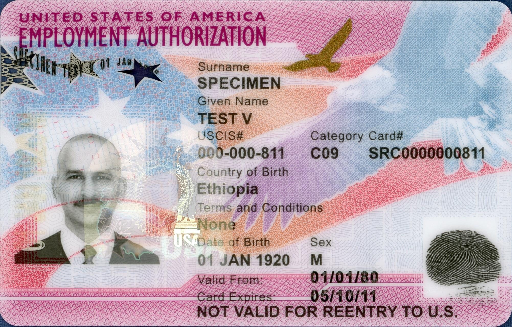

U.S. Work Authorization: How the EAD (Form I-765), Form I-9, and E-Verify Work
Who needs a U.S. work permit (EAD), how to get one, and what the employer's Form I-9 and E-Verify check are — a facts-only guide for immigrants.

To work legally in the United States, a person must have either a status that authorizes work or a document that proves it. U.S. citizens and lawful permanent residents (green card holders) have the unrestricted right to work and do not need a separate work permit — a green card holder presents the green card (Form I-551) directly on the Form I-9 (Source: USCIS, Working in the United States). This guide explains, in facts, the process for everyone else: those who must prove or obtain work authorization.
Who Needs a Work Permit
USCIS groups work-authorized noncitizens into three categories: (1) those authorized to work automatically because of their status (incident to status) — such as refugees and asylees, and certain spouse categories; (2) those authorized to work only for a specific employer — such as H-1B or L-1 holders; and (3) those who must apply for an Employment Authorization Document (EAD) to work (Source: USCIS, Working in the United States; USCIS Policy Manual, Vol. 10). The main categories that must apply include: asylum applicants with a pending case — (c)(8); applicants with a pending adjustment of status (Form I-485) — (c)(9); DACA recipients — (c)(33); Temporary Protected Status (TPS) holders — (a)(12)/(c)(19); and F-1 students on practical training (OPT) — (c)(3) (Source: USCIS, Form I-765 eligibility categories).
The EAD and Form I-765
The work-permit document is the Employment Authorization Document (EAD), officially Form I-766, a plastic card. To obtain it, a person files Form I-765 (Application for Employment Authorization); the application must state the applicant's specific eligibility category code (for example (c)(8), (c)(9), (c)(33)). Different categories can carry different fees, waiting periods, and renewal rules (Source: USCIS, uscis.gov/i-765). The fee is set by the official USCIS fee schedule (Form G-1055): for a standard EAD, $520 on paper and $470 online; $260 when filed together with a pending Form I-485 (adjustment of status). Some humanitarian categories (asylum, refugee, certain parolees, TPS) have a different fee or may qualify for a fee waiver via Form I-912; always check the current G-1055 schedule for the exact amount (Source: USCIS Fee Schedule / Form G-1055).

An EAD Is Temporary — It Must Be Renewed
Each EAD card has a validity period and an expiration date printed on it; you renew it by filing a new Form I-765 before it expires. Previously, in certain categories, a timely renewal application automatically extended work authorization for up to 540 days. However, under a DHS/USCIS final rule (Federal Register, 30 October 2025), this automatic extension was removed for most renewal applications filed on or after 30 October 2025 — meaning work authorization ends on the card's expiration date unless USCIS has approved the renewal. Renewals timely filed before 30 October 2025 in a qualifying category may still receive the up-to-540-day extension. F-1 STEM OPT students keep a separate 180-day automatic extension, and the spouses of E and L visa holders remain authorized to work incident to status (Source: Federal Register, Removal of the Automatic Extension of EADs, 30 Oct 2025; USCIS M-274 Handbook for Employers). As of 2026, this rule is in force.
The EAD Card and the Not Valid for Reentry Note
The EAD card shows the holder's photo, the category code (for example C08, C09, C33), a card number, and a Card Expires date. Most EAD cards carry the note Not Valid for Reentry to U.S. below the expiration date. This means the EAD is a work-authorization document only and cannot by itself be used to re-enter the country; travel permission is arranged separately (Advance Parole, Form I-512) (Source: USCIS M-274 Handbook for Employers).
Form I-9: The Employer Verifies Every Worker
Every U.S. employer must complete a Form I-9 (Employment Eligibility Verification) for every new hire — citizen or not — to verify identity and work authorization. The worker presents a document from the Lists of Acceptable Documents: List A establishes both identity and work authorization in one document (for example a U.S. passport, a green card, or an EAD); List B establishes identity only (for example a state driver's license); List C establishes work authorization only (for example an unrestricted Social Security card or a birth certificate). The worker presents either one List A document, or one List B plus one List C document (Source: USCIS, Form I-9 Acceptable Documents). On timing: the employee completes Section 1 by the first day of work, and the employer completes Section 2 within three business days of the employee's first day (Source: USCIS M-274).
What E-Verify Is
E-Verify is a free, internet-based system run by USCIS (DHS) together with the Social Security Administration (SSA) that electronically confirms work authorization by comparing a worker's Form I-9 information against government records. It does not replace the I-9 but supplements it — the employer must still complete an I-9 for everyone. E-Verify is voluntary for most private employers, but mandatory for federal contractors (whose contracts contain the FAR E-Verify clause), employers of F-1 STEM OPT students, and employers in states whose laws require it (Source: USCIS / DHS E-Verify).
Protection From Discrimination: The Employer Cannot Demand a Specific Document
The Immigrant and Employee Rights Section (IER) of the U.S. Department of Justice's Civil Rights Division enforces the anti-discrimination provision of immigration law (8 U.S.C. section 1324b). The law prohibits an employer, during the I-9 or E-Verify process, from demanding a specific document, requesting more or different documents than required, or rejecting documents that reasonably appear genuine — based on the worker's citizenship or national origin; this is called document abuse. It is the worker, not the employer, who chooses which acceptable documents (List A, or List B + C) to present (Source: U.S. Department of Justice, IER).
Work Authorization and the SSN Are Separate
Work authorization (the right to work) and the Social Security Number (SSN) are two different things: the EAD authorizes work, while the SSN is issued by the SSA for tax and wage reporting. It used to be possible to request an SSN directly through Form I-765; however, that option was removed in 2025 (the SSA stopped honoring those requests around March 2025). An EAD holder now obtains an SSN by applying directly to the SSA — usually in person at a local SSA office with the EAD and identity documents (Source: SSA; USCIS Form I-765 instructions).

Sources
- USCIS — Working in the United States
- USCIS — Form I-765, Application for Employment Authorization
- Federal Register — Removal of the Automatic Extension of Employment Authorization Documents (30 Oct 2025)
- USCIS — Form I-9 Acceptable Documents
- USCIS / DHS — E-Verify
- U.S. Department of Justice — Immigrant and Employee Rights Section (IER)